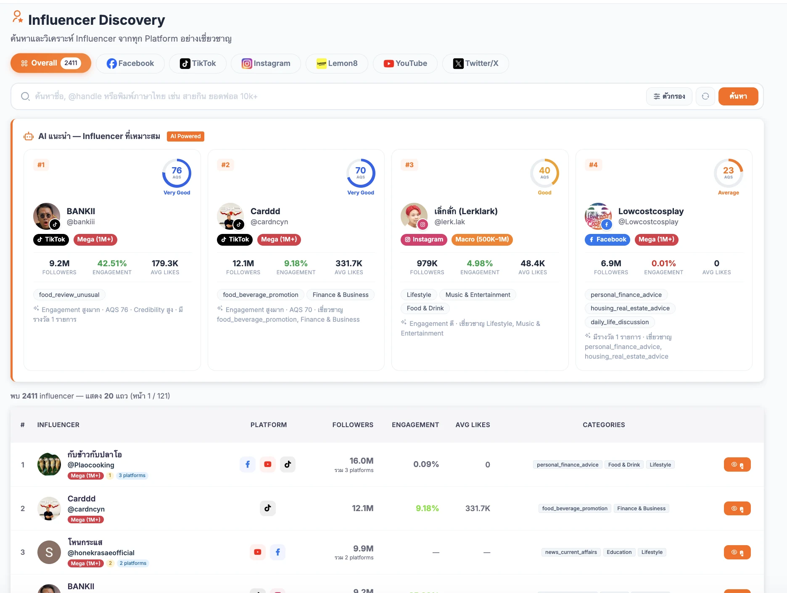

MUSTHERD.COM · PRODUCTION
Mustherd — Multi-Platform Influencer Intelligence
Full-stack creator discovery, campaign tracking, and social analytics platform built on Next.js 15 and a Python FastAPI scraping worker. Aggregates creator metrics across TikTok, Instagram, Facebook, YouTube, Lemon8, and X.
แพลตฟอร์มค้นหาครีเอเตอร์ ติดตามแคมเปญ และวิเคราะห์ข้อมูลโซเชียลแบบ Full-Stack พัฒนาด้วย Next.js 15 คู่กับ Python FastAPI Worker รวบรวมสถิติครีเอเตอร์จาก TikTok, Instagram, Facebook, YouTube, Lemon8 และ X
57,578Active Verified Profilesโปรไฟล์ตรวจสอบแล้วปัจจุบัน
200,000Target Roadmap Capacityเป้าหมายการขยายฐานข้อมูล
87 RoutesNext.js 15 App Router APIsAPI Routes ในระบบจริง
55 ModelsPrisma 6 PostgreSQL Schemaโมเดลฐานข้อมูล Prisma 6
Verified Database Growth: 57,578 Active Profiles / 200,000 Target
ความคืบหน้าฐานข้อมูลจริง: 57,578 โปรไฟล์ / เป้าหมาย 200,000 โปรไฟล์
28.8% toward 200K
- Multi-Engine Discovery & Deduplication: Combines Brave Search API, Bright Data datasets, Apify actors, TikTok Explore, Lemon8 crawlers, and Google Form webhooks with cross-platform identity reconciliation. ค้นหาหลายเครื่องยนต์และป้องกันข้อมูลซ้ำ: เชื่อม Brave Search, Bright Data, Apify, TikTok Explore, Lemon8 และรับข้อมูลจาก Google Form พร้อมระบบตรวจจับโปรไฟล์ซ้ำข้ามแพลตฟอร์ม
- 100K+ Creator Freshness & Campaign GMV: Priority cron refresh for 100K+ follower tiers, post-level engagement rate (ER) calculation, and e-commerce conversion tracking across TikTok Shop, Shopee, and Lazada. อัปเดตข้อมูลสดระดับ 100K+ & วัดยอดขายแคมเปญ: ดึงข้อมูลสดสำหรับอินฟลูเอนเซอร์ 100K+ ผู้ติดตาม คำนวณ ER รายโพสต์ และติดตามยอดขาย TikTok Shop, Shopee, Lazada
- Multimodal AI & CRM Bridge: Uses Gemini Vision OCR to parse creator rate cards/demographics, classifies brand affinity with negative-guard validation, and routes inbound brand inquiries directly into DenCRM. วิเคราะห์ด้วย Gemini AI & เชื่อมต่อ DenCRM: ใช้ Gemini OCR อ่านเรทการ์ดและสัดส่วนผู้ติดตาม จำแนกความเข้ากันของแบรนด์ และส่งต่อ Lead ลูกค้าเข้าสู่ระบบ DenCRM อัตโนมัติ
mustherd.com / influencers-discovery
